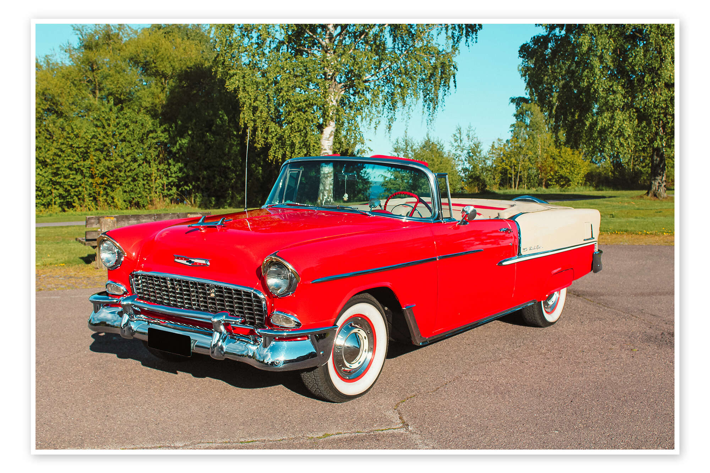

1900s

Les débuts
Naissance de l’automobile de masse avec Ford.
1950s

Âge d'or
Design iconique et explosion de la culture automobile.
Explorez les grandes périodes et découvrez les secrets de cette industrie légendaire.
Naissance de l’automobile de masse avec Ford.
Design iconique et explosion de la culture automobile.
Économie : Début de la production de masse avec Ford, révolution industrielle en marche.
Infrastructures : Premiers réseaux routiers, principalement urbains.
Familles : L'automobile reste un luxe, mais change déjà la mobilité.
Environnement : Impacts encore faibles mais croissance future importante.